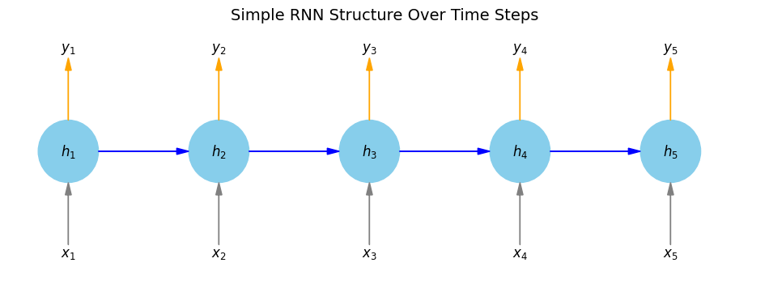
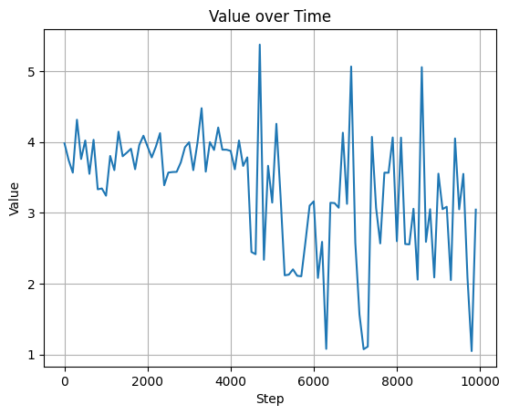

RNN，全名為循環神經網路(Recurrent Neural Network)，是具有記憶功能的模型。它可以發現樣本彼此之間的相互關係，適合處理 series data 的特徵 ，可應用於處理文字資料分類及time series等。
RNN 的主要限制有：
梯度消失或爆炸：RNN 訓練深層時會不穩定
長期依賴問題：無法記住太久以前的資訊
因此實務上通常用改良版：
- LSTM（Long Short-Term Memory）
- GRU（Gated Recurrent Unit）
現今更常用的是 Transformer 模型，但 RNN 在資源有限或學習原理時仍很有價值。本次暫時不使用 pytorch 套件，除了簡單介紹 RNN 外，也會藉由實作手刻一個簡單的 RNN。
主要內容引用自 「李金洪. 2022. 全格局使用 PyTorch - 深度學習和圖神經網路 - 基礎篇. 深智數位」第 7.5 節。
RNN 的模型結構
\(\{x_t\}\)表示 input；\(\{y_t\}\) 表示 output； \(\{h_t\}\)表示 hidden layer；藍色箭頭表示依順序( 即 time series 中的 \(t\) )產生的權重，在一開始還沒有東西，隨著 \(t\) 增加而影響每次產生的 output，這就是 RNN 的記憶功能特性。
上圖為模型逐漸隨著\(t = 5\)增加而呈現的流程圖，如果是一般情形則如下圖：

實作：退位減法
國小學的直式減法中，個位數不夠時會先向十位數字借位，再做減法，這種向前一位借數字再相減的動作叫做退位減法。在此我們利用退位減法，刻一個簡單 RNN ，藉此了解 RNN。退位減法的語法結構像這樣：
\[a - b = c\]
其中 a、b、c都是整數，且\(a>b\)，我們的目標是a、b已知的前提下，印出來的c要是正確的先來生成資料(a、b、c)
import numpy as np
np.random.seed(822)
# 省動設定
largest_number = 255 # 例如，7位元
binary_dim = 8 # 減法計算的位數
int2binary = {}
binary = np.unpackbits(
np.array([range(2**binary_dim)], dtype=np.uint8).T, axis=1
)
for i in range(2**binary_dim):
int2binary[i] = binary[i]
def requires_borrow(a, b):
"""檢查 a - b 是否會需要退位"""
a_str = str(a)[::-1] # 反轉為從低位開始
b_str = str(b)[::-1]
for i in range(len(b_str)):
a_digit = int(a_str[i]) if i < len(a_str) else 0
b_digit = int(b_str[i])
if a_digit < b_digit:
return True
return False
# 資料生成
data = []
while len(data) < 10000:
a_int = np.random.randint(2, largest_number)
b_int = np.random.randint(1, a_int) # 保證 b < a
if not requires_borrow(a_int, b_int):
continue
a = int2binary[a_int]
b = int2binary[b_int]
c_int = a_int - b_int
c = int2binary[c_int]
data.append((a, b, c))
# data 現在包含了會需要退位的減法資料
print(f"共產生 {len(data)} 筆退位減法資料")共產生 10000 筆退位減法資料然後來製作模型
模型定義
因為是手刻，所以激勵函數及其導函數需自行指定，這裡用的 \(\sigma (.)\) 是
\[\frac{1}{1+e^{-x}}\]
其導數為：
\[\frac{e^{-x}}{1+e^{-x}}=\frac{1}{1+e^{-x}}(1-\frac{1}{1+e^{-x}})\]
import copy, numpy as np
# 忽略所有數值運算警告（如 overflow, invalid value 等）
np.seterr(over='ignore', invalid='ignore')
# active function
def sigmoid(x):
output = 1/(1+np.exp(-x))
return output
# derivative of active function
def sigmoid_output_to_deriv(output):
return output*(1-output)定義模型參數
再來在建立模型前，先定義模型參數，這裡我們將隱藏層的權重設為synapse_0(輸入及輸出符合 hidden dimension)；輸出層的權重設為synapse_1。
lr = 0.1
input_dim = 2 # (a, b)
hidden_dim = 16
out_dim = 1 # c
synapse_0 = (2*np.random.random((input_dim,hidden_dim))-1)*0.05
synapse_1 = (2*np.random.random((hidden_dim,out_dim))-1)*0.05
synapse_h = (2*np.random.random((hidden_dim,hidden_dim))-1)*0.05
# 反向傳遞的權重更新(平時寫在最佳化器裡)
synapse_0_up = np.zeros_like(synapse_0)
synapse_1_up = np.zeros_like(synapse_1)
synapse_h_up = np.zeros_like(synapse_h)然後每次執行模型前應初始化模型，首次執行時 output 應為 0，總誤差應為 0。
# 預測值
d = np.zeros_like(c)
overallError = 0
# 反向傳遞的誤差紀錄
layer_2_deltas = []
layer_1_values = []
layer_1_values.append(np.ones(hidden_dim)*0.1)
# 因為一開始沒有 hidden layer 初值設為0.1執行模型：正向
實際執行模型時，會讓資料先做正向 (方向是起點到終點)，然後再做反向更新權重(方向為終點回到起點)。
任務說明（概念）
我們的目標是： 對兩個二進位數 \(a\)、\(b\)，每一個位元進行減法 \(c = a - b\) 的預測。 這裡的模型是一個簡單的 RNN，用來逐位（bit-by-bit）預測輸出 \(c\) 的每一位元 \(c_t\)，其中 \(t\) 表示時間步，從最低位（右邊）往左處理。
符號定義
| 數學符號 | 意義 | 維度 |
|---|---|---|
| \(x_t\) | 時間步 \(t\) 的輸入向量 | \(\mathbb{R}^2\) |
| \(y_t\) | 正確輸出值（目標） | \(\mathbb{R}\) |
| \(\hat{y}_t\) | 模型在時間步 \(t\) 的預測 | \(\mathbb{R}\) |
| \(h_t\) | 隱藏層狀態 | \(\mathbb{R}^h\) |
| \(W_{xh}\) | 輸入到隱藏層的權重矩陣 | \(\mathbb{R}^{2 \times h}\) |
| \(W_{hh}\) | 前一個隱藏狀態到現在的隱藏狀態 | \(\mathbb{R}^{h \times h}\) |
| \(W_{hy}\) | 隱藏層到輸出層的權重 | \(\mathbb{R}^{h \times 1}\) |
| \(\sigma(\cdot)\) | sigmoid 函數：\(\sigma(x) = \frac{1}{1 + e^{-x}}\) | |
| \(e_t\) | 預測誤差：\(y_t - \hat{y}_t\) | \(\mathbb{R}\) |
| \(\delta^{(2)}_t\) | 輸出層誤差對應的 delta | \(\mathbb{R}\) |
整體流程為：對於每個位元時間步 \(t\)，模型進行以下計算：
\[ \begin{aligned} x_t &= \begin{bmatrix} a_t \\ b_t \end{bmatrix} \\ h_t &= \sigma(x_t W_{xh}) + h_{t-1} W_{hh} \\ \hat{y}_t &= \sigma(h_t W_{hy}) \\ e_t &= y_t - \hat{y}_t \\ \delta^{(2)}_t &= e_t \cdot \hat{y}_t (1 - \hat{y}_t) \end{aligned} \]
其中 \(h_0 = \vec{0}\) 初始為零向量。
步驟：
- 輸入（每一位 bit）
給定時間步 \(t\) 的輸入 bit：
\[ x_t = \begin{bmatrix} a_t \\ b_t \end{bmatrix} \in \mathbb{R}^2 \]
- 隱藏層計算
（此模型使用的是「非標準」RNN 形式，即先對輸入做 sigmoid，再加上前一個 hidden state）
\[ h_t = \sigma(x_t W_{xh}) + h_{t-1} W_{hh} \]
其中：
\(h_{t-1}\) 是上一時間步的隱藏層狀態
若要用「標準」RNN 形式應為：
\[ h_t = \sigma(x_t W_{xh} + h_{t-1} W_{hh}) \]
- 輸出層計算
將隱藏狀態傳到輸出層並經過 sigmoid：
\[ \hat{y}_t = \sigma(h_t W_{hy}) \]
- 預測誤差
目標輸出為 \(y_t\)，模型預測為 \(\hat{y}_t\)，則誤差為：
\[ e_t = y_t - \hat{y}_t \]
輸出層的反向傳播（誤差梯度）
使用平方誤差損失函數，其對預測輸出 \(\hat{y}_t\) 的導數為：
\[ \frac{\partial L_t}{\partial \hat{y}_t} = -(y_t - \hat{y}_t) = -e_t \]
但由於輸出層有經過 sigmoid，需乘上 sigmoid 的導數：
\[ \sigma'(\hat{y}_t) = \hat{y}_t (1 - \hat{y}_t) \]
因此輸出層 delta 為：
\[ \delta^{(2)}_t = e_t \cdot \hat{y}_t (1 - \hat{y}_t) \]
預測結果記錄（量化輸出）
模型最終預測結果會被四捨五入為 0 或 1：
\[ \hat{c}_t = \text{round}(\hat{y}_t) \]
整體誤差統計
若將每一位的絕對誤差做加總，可以得到一整筆資料的總預測誤差：
\[ \text{OverallError} = \sum_{t=1}^{T} |e_t| \]
code
開始執行，先做正向：
def RNN_positive(a, b, c):
# 定義模型參數 (前面已做過)
d = np.zeros_like(c)
overallError = 0
layer_1_values = [np.zeros((1, hidden_dim))]
layer_2_deltas = []
for position in range(binary_dim):
# input genarate and output genarate
X = np.array([[a[binary_dim - position - 1], b[binary_dim - position - 1]]])
# X = X.reshape(1, 2) # 明確定義為 2D（1 row, 2 columns）
# 正解
y = np.array([[c[binary_dim - position - 1]]]).T
# (input + hidden) -> new hidden
layer_1 = sigmoid(np.dot(X,synapse_0)) + np.dot(layer_1_values[-1],synapse_h) # 出來 1 x hidden_dim 需轉置
layer_2 = sigmoid(np.dot(layer_1, synapse_1))
# hidden*( matrix of hidden to output) -> output
layer_2_error = y - layer_2
layer_2_deltas.append((layer_2_error)*sigmoid_output_to_deriv(layer_2))
overallError += np.abs(layer_2_error[0])
d[binary_dim - position - 1] = np.round(layer_2[0][0])
layer_1_values.append(copy.deepcopy(layer_1))
future_layer_1_delta = np.zeros(hidden_dim)
return d, layer_1_values, layer_2_deltas, overallError
code 逐列解說
每一個迴圈步驟代表處理一個位元（從最低位開始）。
for position in range(binary_dim):- 這是循環處理每一個二進位的位元（從第 0 位到第 binary_dim - 1 位）。
- 通常是從右到左（最低位到最高位）。
X = np.array([a[binary_dim - position - 1], b[binary_dim - position - 1]])- 取出第
position位的兩個輸入 bit：a和b。 - 二進位是從右往左計算的，所以要用
binary_dim - position - 1來取得正確位元。
y = np.array([c[binary_dim - position - 1]]).Ty是正確答案c的當前位元。.T是把它轉置成列向量，以配合後續矩陣運算。
layer_1 = sigmoid(np.dot(X, synapse_0)) + np.dot(layer_2_values[-1], synapse_h)- 這是計算目前時間步的隱藏層輸出。
- 第一部分：
X @ synapse_0是輸入層乘上輸入到隱藏層的權重。 - 第二部分：
layer_2_values[-1] @ synapse_h是上一時間步的隱藏狀態與 recurrent 權重相乘。 - 加總後通過 sigmoid 激活函數，得到目前時間步的隱藏層狀態。
layer_2 = sigmoid(np.dot(layer_1, synapse_1))- 將隱藏層輸出通過輸出層權重
synapse_1，並套用 sigmoid，得到預測結果（0 或 1 的機率）。
layer_2_error = y - layer_2
layer_2_deltas.append(layer_2_error * sigmoid_output_to_deriv(layer_2))- 計算這一位的預測誤差。
- 將誤差乘以 sigmoid 導數，得到反向傳播時的 delta（誤差梯度）。
- 把 delta 儲存起來，稍後會用來做權重更新。
overallError += np.abs(layer_2_error[0])- 累加這一位的絕對誤差，用來觀察整體模型在這一筆資料上的表現。
d[binary_dim - position - 1] = np.round(layer_2[0][0])- 根據預測值進行四捨五入（0 或 1），儲存為預測結果的其中一位。
d最終會是整筆輸出結果的二進位數。
layer_1_values.append(copy.deepcopy(layer_1))是用來把當前時間步的 隱藏層輸出 (layer_1) 儲存起來，以便在未來的 反向傳播（Backpropagation Through Time, BPTT） 中使用。
使用
deepcopy()可以確保每個時間步的隱藏層輸出都正確保留下來，不被未來時間步覆蓋或污染把每個時間步的
layer_1加到layer_1_values這個 list 裡面這個 list 最後會長成：
layer_1_values = [h_{-1}, h_0, h_1, ..., h_{T-1}]
future_layer_1_deltas = np.zeros(hidden_dim)- 為了做後續反向之用，清空
future_layer_1_deltas。
再做反向的權重更新：
執行模型：反向
這裡因為 RNN 的特性，反向時會加入 BPTT 演算法處理。理論部分在此略過，直接說明流程，整體流程為：
給定時間步 \(t = T-1, T-2, \dots, 0\)，反向傳播的數學表達為：
- 計算隱藏層 delta
\[ \delta_t^{(1)} = \delta_{t+1}^{(1)} W_{hh}^T + \delta_t^{(2)} W_{hy}^T \]
- 累加權重梯度
\[ \Delta W_{hy} += h_t^T \delta_t^{(2)} \]
\[ \Delta W_{hh} += h_{t-1}^T \delta_t^{(1)} \]
- 權重更新（一次更新）
\[ W_{hy} \leftarrow W_{hy} + \eta \cdot \Delta W_{hy} \]
\[ W_{hh} \leftarrow W_{hh} + \eta \cdot \Delta W_{hh} \]
符號定義
| 程式變數 | 數學符號 | 意義 |
|---|---|---|
x_t |
\(x_t \in \mathbb{R}^2\) | 第 \(t\) 個時間步的輸入（兩個位元） |
h_t |
\(h_t \in \mathbb{R}^h\) | 第 \(t\) 個時間步的隱藏層輸出 |
\delta_t^{(2)} |
\(\delta_t^{(2)} \in \mathbb{R}\) | 第 \(t\) 步的輸出層 delta（來自前向誤差） |
\delta_t^{(1)} |
\(\delta_t^{(1)} \in \mathbb{R}^h\) | 第 \(t\) 步的隱藏層 delta |
W_{hy} |
\(\text{synapse\_1} \in \mathbb{R}^{h \times 1}\) | 隱藏層 → 輸出層的權重 |
W_{hh} |
\(\text{synapse\_h} \in \mathbb{R}^{h \times h}\) | 隱藏層（上一步）→ 隱藏層 |
lr |
\(\eta\) | 學習率 |
數學推導
- 隱藏層 delta 的計算
根據鏈式法則，隱藏層的 delta 可由兩個部分反向傳遞而來：
來自輸出層的誤差反傳：
\[ \delta_t^{(2)} W_{hy}^T \]
來自下一個時間步隱藏層的誤差反傳（RNN 的時間依賴）：
\[ \delta_{t+1}^{(1)} W_{hh}^T \]
因此總合為：
\[ \delta_t^{(1)} = \delta_{t+1}^{(1)} W_{hh}^T + \delta_t^{(2)} W_{hy}^T \]
其中 \(\delta_{t+1}^{(1)}\) 是 未來時間的隱藏層 delta，一開始設為 0，然後逐步向後遞推。
- 權重的梯度累積
這部分對應於：
- 輸出層權重更新項
\[ \Delta W_{hy} += h_t^T \delta_t^{(2)} \]
（隱藏層 → 輸出層）
- RNN recurrent 權重更新項
\[ \Delta W_{hh} += h_{t-1}^T \delta_t^{(1)} \]
（前一個隱藏層 → 當前隱藏層）
- 權重更新
在完成所有時間步的誤差累積之後，對所有權重進行梯度下降：
\[ W_{hy} \leftarrow W_{hy} + \eta \cdot \Delta W_{hy} \]
\[ W_{hh} \leftarrow W_{hh} + \eta \cdot \Delta W_{hh} \]
code
def RNN_negative(layer_1_values, layer_2_deltas, a, b):
global synapse_0, synapse_1, synapse_h
global synapse_0_up, synapse_1_up, synapse_h_up
future_layer_1_delta = np.zeros((1, hidden_dim))
for position in range(binary_dim):
X = np.array([[a[position], b[position]]])
layer_1 = layer_1_values[-position - 1]
prev_layer_1 = layer_1_values[-position - 2]
layer_2_delta = layer_2_deltas[-position - 1]
layer_1_delta = (
future_layer_1_delta.dot(synapse_h.T) + layer_2_delta.dot(synapse_1.T)
) * sigmoid_output_to_deriv(layer_1)
synapse_1_up += np.atleast_2d(layer_1).T.dot(layer_2_delta)
synapse_h_up += np.atleast_2d(prev_layer_1).T.dot(layer_1_delta)
synapse_0_up += X.T.dot(layer_1_delta)
future_layer_1_delta = layer_1_delta
# 更新權重
synapse_0 += synapse_0_up * lr
synapse_1 += synapse_1_up * lr
synapse_h += synapse_h_up * lr
# 清空更新梯度
synapse_0_up *= 0
synapse_1_up *= 0
synapse_h_up *= 0
code 逐列解說
for position in range(binary_dim):- 作用：從第一個 bit（position=0）開始，依序向後處理所有位元（bit）的位置，做反向傳播（從最後一個時間步往前）。
X = np.array([a[position], b[position]])- 作用：取得第
position位元的輸入，這裡是數字a和b在該位元的二進位值，組成一個長度為2的輸入向量 \(x_t\)。
layer_1 = layer_2_values[-position-1] # 目前時間的hidden layer- 作用：取得對應時間點的隱藏層狀態 \(h_t\)。
- 注意：
layer_2_values是時間序列的隱藏層列表，-position-1從最後一個時間步往前索引。
prev_layer_1 = layer_2_values[-position-2] # 前時間的hidden layer- 作用：取得前一時間步（\(t-1\)）的隱藏層狀態 \(h_{t-1}\)，用於更新循環權重。
layer_2_deltas = layer_2_deltas[-position-1]- 作用：取得當前時間步輸出層的 delta \(\delta_t^{(2)}\)，也就是輸出層的誤差梯度。
layer_1_deltas = (future_layer_1_deltas.dot(synapse_h.T) + layer_2_deltas.dot(synapse_1.T))作用：計算隱藏層的 delta \(\delta_t^{(1)}\)，包含：
- \(\delta_{t+1}^{(1)}\) 經由循環權重 \(W_{hh}\) 反向傳播的誤差 (future_layer_1_deltas.dot(synapse_h.T))
- \(\delta_t^{(2)}\) 經由輸出層權重 \(W_{hy}\) 反向傳播的誤差 (layer_2_deltas.dot(synapse_1.T)) 這是 RNN 時間與層間反向誤差的加總。
synapse_1_up += np.atleast_2d(layer_1).T.dot(layer_2_deltas)- 作用：累加輸出層權重 \(W_{hy}\) 的梯度： \(\Delta W_{hy} += h_t^T \delta_t^{(2)}\) 這是根據誤差對權重的偏微分。
synapse_h_up += np.atleast_2d(prev_layer_1).T.dot(layer_1_deltas)- 作用：累加循環權重 \(W_{hh}\) 的梯度： \(\Delta W_{hh} += h_{t-1}^T \delta_t^{(1)}\) 用前一時間的隱藏狀態乘上當前時間的隱藏層 delta。
future_layer_1_deltas = layer_1_deltas- 作用：將當前時間步的隱藏層 delta 儲存起來，作為下一個時間步（往前一位）計算的「未來隱藏層 delta」使用。
- 這是反向傳播的關鍵：誤差從後面時間步向前傳遞。
# 更新權重
synapse_0 += synapse_0_up * lr
synapse_1 += synapse_1_up * lr- 作用：使用累積的梯度 \(\Delta W\) 按照學習率 \(\eta\) 更新權重。 這幾行程式碼的作用是完成 反向傳播與權重更新後的梯度清零（reset），以下是每一行的說明（包含對應的數學概念）：
synapse_h += synapse_h_up * lr意義：
- 將 recurrent 權重 \(W_{hh}\) 依照學習率 \(\eta\) 更新：
\[ W_{hh} \leftarrow W_{hh} + \eta \cdot \Delta W_{hh} \]
- 其中
synapse_h_up是之前累積的權重梯度 \(\Delta W_{hh}\)，學習率為lr。
synapse_0_up *= 0
synapse_1_up *= 0
synapse_h_up *= 0意義：
- 將所有已經使用過的梯度變數清零，為下一筆資料的訓練準備。
- 對應數學上是將累積的梯度矩陣歸零：
\[ \Delta W_{xh} = 0, \quad \Delta W_{hy} = 0, \quad \Delta W_{hh} = 0 \]
這麼做是因為每次訓練新一筆資料（或 batch）時，需要重新計算對應的權重梯度，避免與前一筆混在一起。
結果
def binary2int(binary_array):
"""將二進位 ndarray 轉換為十進位整數"""
return int("".join(str(int(b)) for b in binary_array), 2)
Error_list = []
for j, (a, b, c) in enumerate(data):
a_int = binary2int(a)
b_int = binary2int(b)
c_int = binary2int(c)
# print(f"{a_int} + {b_int} = {c_int}")
d, layer_1_values, layer_2_deltas, overallError = RNN_positive(a, b, c)
RNN_negative(layer_1_values, layer_2_deltas, a, b)
if j % 100 == 0:
Error_list.append(overallError)
if j % 1000 == 0:
print(f"Total error: {overallError}")
print(f"Prediction value: {d}")
print(f"True value: {c}")
out = 0
for index, x in enumerate(reversed(d)):
out += int(x) * pow(2, index)
print(f"{a_int} - {b_int} = {out}")
print("----------")Total error: [3.97936582]
Prediction value: [0 0 0 0 0 0 0 0]
True value: [0 0 0 0 1 0 0 0]
40 - 32 = 0
----------
Total error: [3.24030251]
Prediction value: [0 0 0 0 0 0 0 0]
True value: [0 0 0 1 0 0 0 0]
34 - 18 = 0
----------
Total error: [3.93281865]
Prediction value: [0 0 0 0 0 0 0 0]
True value: [0 0 1 0 1 0 1 1]
107 - 64 = 0
----------
Total error: [3.99430241]
Prediction value: [0 0 0 0 0 0 0 1]
True value: [0 0 1 1 1 0 1 0]
111 - 53 = 1
----------
Total error: [3.87219041]
Prediction value: [0 1 1 0 1 1 1 1]
True value: [0 1 0 0 1 1 0 1]
119 - 42 = 111
----------
Total error: [3.14270565]
Prediction value: [0 0 0 0 0 0 0 0]
True value: [0 0 0 0 1 1 1 0]
60 - 46 = 0
----------
Total error: [3.16076726]
Prediction value: [0 0 0 0 0 0 0 0]
True value: [0 0 1 0 1 0 1 1]
239 - 196 = 0
----------
Total error: [2.5766328]
Prediction value: [0 0 0 0 0 0 1 0]
True value: [0 0 1 0 0 1 1 1]
133 - 94 = 2
----------
Total error: [2.59768901]
Prediction value: [0 0 0 0 0 0 0 0]
True value: [1 0 0 1 0 0 0 1]
223 - 78 = 0
----------
Total error: [3.55110057]
Prediction value: [0 0 0 0 1 0 0 0]
True value: [1 0 0 1 1 1 1 1]
167 - 8 = 8
----------從以上結果摘錄中可以看到，雖然因為都是手刻，有些資料在經過 acivative funciton 時發生溢位，倒致 Prediction value 變成 0 向量，但整體還算能動。把誤差化成圖：
import matplotlib.pyplot as plt
# x 軸：資料點編號（第幾次）
x = list(range(0,len(Error_list)*100, 100))
# y 軸：每個值
y = Error_list
# 畫圖
plt.plot(x, y) # 折線圖 + 每點畫圈
plt.xlabel("Step")
plt.ylabel("Value")
plt.title("Value over Time")
plt.grid(True)
plt.show()
可以發現有隨著資料量增加訓練越來越好的趨勢。
結論
這次我們手刻了一個簡單的 RNN，並用它來解決退位減法的問題，藉此理解它的運作原理。為了幫助理解，我略過一些數學細節。詳細可以參考其他書籍，或是前面提到的 main reference。
補充：為什麼有時候訓練出來都是 0 向量
問 AI 的結果如下：
這是非常常見的現象，當你將訓練資料從增加時，模型的預測結果全變成 0，可能是以下幾個常見的機制失衡或錯誤導致的。
問題現象
例如：
- 訓練資料： 10,000 筆 → 模型還會預測出接近正確的值
- 訓練資料： 100,000 筆 → 模型幾乎只輸出
0（或其他固定值）
這代表：
- 模型沒有效學習到規律（可能卡在某個區域）
- 或者學習率太小、權重更新不動
- 或者資料不平衡、loss 消失
可能原因分析
- 學習率太小 → 權重幾乎沒更新
- 小資料量下小學習率還能跑
- 資料一多，梯度很小時根本沒辦法推動權重更新
✅ 對策：
- 嘗試調整
learning_rate，例如從0.1提高到0.5、1.0甚至更高
learning_rate = 0.5 # 試著加大看看效果- 梯度消失（vanishing gradient）
- 你用了
sigmoid，如果輸入太大或太小，導數會趨近 0 - 時間步過長 + sigmoid，導致梯度傳不回來
✅ 對策：
- 替代激活函數（如
tanh或ReLU） - 使用 clipped gradient（進階方法）
- 降低 binary_dim 的數量或減少時間步數測試
- 資料不平衡
- 訓練資料中，可能大部分位元都為
0 - 模型學會「都預測 0」反而 loss 最小
對策：
- 分析資料中各 bit 的 0/1 分布
- 平衡輸出資料、加權 loss
- 模型訓練不夠輪（太早看結果）
- 資料多但 epoch 數太少
- 每筆資料更新一次，epoch 效果變小
對策：
- 多跑幾輪 epoch（例：多次迴圈訓練資料）
for epoch in range(10):
for a, b, c in data:
...- 整批資料記憶體吃不消（爆量時變慢、失效）
- 如果你用 numpy，每筆 forward/backward 都是單筆處理，100,000 筆會非常慢
- 可能導致某些變數錯誤、梯度計算壞掉而沒注意到
對策：
- 測試小批次先確保正確性
- 或先試 20,000 → 50,000 → 再到 100,000 筆觀察效應
建議步驟（Debug 順序）
- 先確認資料分布：
ones = sum([sum(c) for _, _, c in data])
zeros = len(data) * len(data[0][2]) - ones
print(f"1 的比例: {ones / (ones + zeros):.4f}")加入預測值與 loss 的紀錄與觀察（是否都變成 0）
試著多跑幾次 epoch：
for epoch in range(5):
for a, b, c in data:
...調整學習率
learning_rate = 0.5 # 可嘗試 1.0嘗試替代 sigmoid 為 tanh（適合雙向輸出）
最簡單測法（加速 debug）
試用以下條件：
learning_rate = 0.5binary_dim = 8hidden_dim = 16- 資料量減少，觀察漸變情況
總結對策表：
| 問題 | 解法建議 |
|---|---|
| 資料太多但沒多輪訓練 | 多跑幾個 epoch |
| 學習率太小 | 提高 learning rate 到 0.5 或 1.0 |
| 梯度消失（使用 sigmoid） | 試 tanh、ReLU 或梯度剪裁 |
| 資料偏向 0 | 加入 loss 權重或數據平衡 |
| 權重沒初始化或錯誤 | 確認隨機初始化沒被覆蓋 |
補充：RNN 應用
文字資料應用原理
文字是一種有順序的資料（句子 = 單字序列），例如：
“I love time series.”
每個字對整體句子的意思都有影響。RNN 透過「記憶」前面的資訊，來理解目前的輸入。
以模型結構來說，\(\{x_t\}\)便是正確的文字序列資料(ex. “I love time series.”)
RNN 處理文字資料的基本流程：
文字預處理
- 將句子分詞（tokenization）
- 轉成數字（word to index）
- 建立詞嵌入（embedding）
建構 RNN 模型
- 輸入層：嵌入向量
- 隱藏層：RNN / LSTM / GRU
- 輸出層：看任務類型（分類、預測下一字、標註）
模型訓練與推論
- 使用標準的損失函數（如交叉熵）
- 訓練完模型後就能進行文字生成、分類或翻譯等任務
應用場景舉例：
| 任務 | RNN 的應用方式 |
|---|---|
| 文字分類 | 輸入整個句子，最後用 RNN 最後一個 hidden state 做分類（如情感分析） |
| 語言模型 / 文字生成 | 給定前面幾個字，RNN 預測下一個字（或詞） |
| 機器翻譯 | 使用 Encoder-Decoder 架構（雙 RNN），前半編碼原始語句，後半生成翻譯 |
| 命名實體識別（NER） | 每個字都產出一個預測，使用 bidirectional RNN 處理前後文 |
No matching items